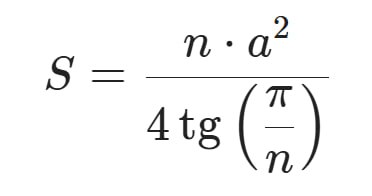

Написать функцию вычисляющую площадь правильного многоугольника, где n - количество сторон, а a - длина стороны

Написать функцию вычисляющую периметр правильного многоугольника по количеству и длине сторон
Написать функцию вычисляющую и возвращающую площадь и периметр правильного многоугольника используя ранее написанные функции